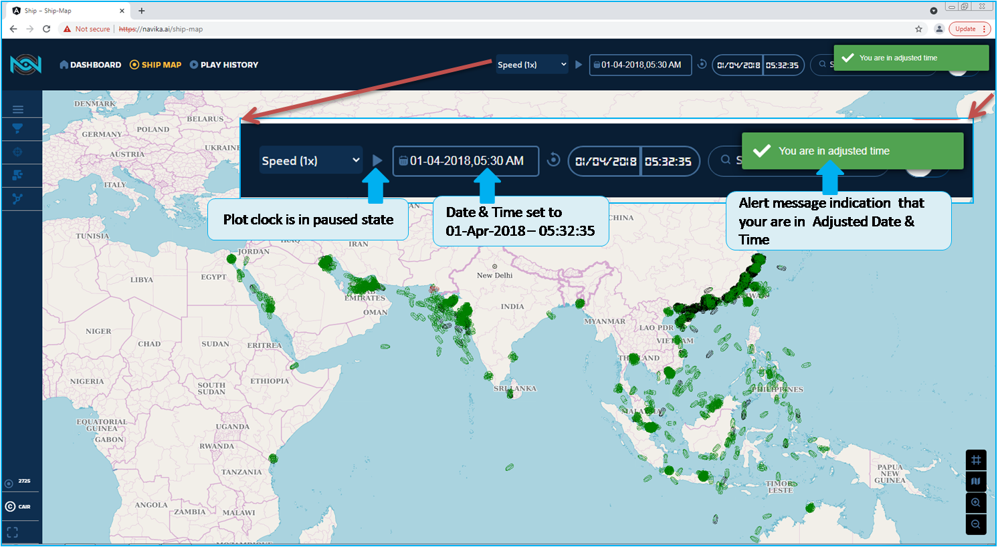

Ships Of Interest & Group of Interest¶
This chapter requires basic knowledge of Global Search.
Search feature in this application enables you to find a ship of interest based on shipname(even a partial shipname), MMSI, IMO.
Navika application has an option to have your own set of list, ships of interest (any category, type). It is defined as Ships of Interest and Ship-Group of Interest in this documentation and application.
If ship is found of your choice, it is highlighted. So you have can click on the ship icon highlighted. As indicated in the Fig. 105
Other option to identify the ship or MMSI is to hover the Mouse coursor over the ship icon. Tooltip pop-up indicate the basic information of ship MMSI details.(MMSI,Latitude,Longitude, Time stamp)
This option is randomly viewing the ship as there is no other method to find.
After search, if you have found, it will be highlighted with flashing indication. You can hover the mouse cursor over the highlighted MMSI/ship, Tool tip will display the basic details of the ships. That is Latitude and Longitude, MMSI, and DTG. Left click on the ship icon and pop-up menu will display.
In this pop-up menu you can observe the details and paramters of the ship.
These data are from AIS data received from the individual ship.
(Regarding AIS refer faq’s in this documentation).
Briefing on the Search function with which the continuation of the Ships Of Interest and Ships-Group of Interest.
We have to login in the Adjusted Date and time, currently the documentation is referred with historical AIS data. So in the Fig. 99 you login to your account
Fig. 99 Login into your Account¶
In the web page select Adjusted Date and Time option to login, since you have the historical AIS data. As indicated in the Fig. 100. Once you have logged in, Plot clock is paused, the page will never refresh and there is no movement of the ship, so that you had selected for the SOI - Ships of Interest. After you have added to SOI list. This will be discussed later in this section.
Fig. 100 Login to Adjusted Date and Time¶
Once you have logged into the Adjusted date and time, as indicated in the Fig. 101 message will confirm your are in Adjusted Time
Fig. 101 Login with Adjusted Time Alert message¶
In the Fig. 102 you can view the details of the ships you had searched. (regarding search, please refer Global Search chapter in this documentation)
Fig. 102 Process to Search MMSI¶
Once you have searched the and pressed Enter key the searched MMSI indicated as in the Fig. 103
Fig. 103 Searched_MMSI¶
You will view pop-up menu by clicking on the ship icon flashing, as you view in the Fig. 105, even when you hover the mouse cursor over the ship icon, a tool tip as indicated in the Fig. 104 provides you the basic details of the Ship
Fig. 104 Searched MMSI with Mouse hover tooltip¶
In the Fig. 105 indicates, when you mouse click over the ship Icon, a pop-up menu is displayed.
Fig. 105 Searched MMSI by Mouse click pop-up menu¶
In the Fig. 106 indicated the complete details of the ships you had selected, that is Overview column and Tabular Form and you have observed the crosshair which is in Colour in Black. As selected ship is not yet added.
Fig. 106 Searched MMSI To add to SOI¶
A now proceed with how to add this ship to an Individual Ship (Ship Of Interest)
By clicking on the crosshair in the Fig. 107 indicate how to add the ship to the list.

Fig. 107 MMSI add to SOI¶
When you add to an individual ships list, crosshair will be RED, default is BLACK. In the Fig. 108 indicate crosshair has changed from default black to RED.
After you have clicked on the Crosshair, Track computation alert message is diplayed, process will take 10 minutes. As indicated Fig. 109 Since this duration will compute all the required information and stores in the server. Later if you want to check the trajectory. This will be discussed later in this chapter.
One more example for the Adding the ship to the group, in the Fig. 110 indicate the ship is been added, you can observe that the crosshair changed the colour from balck to Blue, as explained in this chapter.
Fig. 110 Ship is Added to Existing Group¶
The Crosshair has different colour indication for the particular function, In the Fig. 111 indicated, details as below
Crosshair on the Menu - Navy Blue colour is indication to open Ship of Interest.
Crosshair on the menu - Yellow colour indicated that you have selected Ships of Interest.
Crosshair on the Pop-up menu for Individual ship it is default black colour. The selected ship is not in the Ships of Interest or Group of Ships.
Crosshair is in Red colour indicate that the selected ship is added to Ships of Interest (individual)
Crosshair is in Green colour indicate that the selected ship is added to Ships of Interest and Group of Ships. Both individual and in Group.
Crosshair is in Blue colour indicate that the selected ship is added to Group of Ships only and not in individual list.
Fig. 111 Crosshair colour and indication¶
In the Fig. 112 indicate the Crosshair in yellow colour. Ship of Interest menu is opened along with Track and Anomaly Info panel is minimized.
Fig. 112 Ship of Interest Menu is opened with Crosshair colour indication¶
As you have learnt how to add the ship to Individual and Group of Ships. Further to the SOI and GOI, will get familiar with Trajectory information and Anomaly. In the Fig. 113 indicate option to get into the SOI and GOI - track info panel.
Fig. 113 SOI GSOI Menu open with plot clock in current Time¶
You have observed no ships are plotted in the current dat and time. Navika application is progressing to complete the Live streaming of the data and plot over the map.
Lets get into the SOI, in the Fig. 114 there is no Track Info panel. As you have not yet select the ship you have added to Individual ships.
Fig. 114 Track Info panel not visible¶
In the below Fig. 115 indicates with track info panel. Since one ship is selected in the Individual ships.
Fig. 115 Track Info displayed after Selected ship¶
After selecting the a particular ship in Individual ships list, track info panel is minimised. Once you click over the panel, it is pulled up with the details of the ships you had selected.
As indicated in Fig. 116
Fig. 116 Track Info panel displayed in Current Time¶
You have selected the ship, so now you can check the track information of the ship. Even if you are in Adjusted Date and Time, the SOI and GOI is not impacted. As indicated in the Fig. 117 The Track Info panel is displayed as per the AIS data received.
Fig. 117 TrackInfo displayed in Adjusted-Time¶
In the Fig. 118 Trajectory details and contents are displayed.
Fig. 118 Track Info Panel Ship Trajectory details¶
Apart from the individual ships are displayed, additional option is you can select the multiple ships to be displayed in the Track Info panel. as indicated in the Fig. 119
Fig. 119 Track Info displayed with Multiple ships Listed¶
One of the feature in the Navika application is to plot and display the Anomaly / Deviation of the ship. The behaviour of the ships are analysed.
In navika application it has 4 anomaly / deviations as categorised:
Path deviation
Destination deviation
Ship type deviation
Choice of Anchorage
The following explained in details of the anomaly info:
1. Path deviation:¶
In the Fig. 120 this indicates as it is under development. So in the Fig. 121 is the model for the trajectory where the anomaly occurred, in the panel details of the track info is dipalyed and you can observe the path deviation.
You can select by clicking on the Anomaly Info
Click on the button to plot the trajectory, for individual ship
This is the typical path the ship has to pass, but deviated the path. You can observe the path deviation in the break lines.
You can observe Departure location to Destination location representation for you to understand the Deviation path.
2. Destination deviation:¶
In the Fig. 123 model indicates trajectory with anomaly occurred, the trajectory is plotted and you can observe the Destination deviation.
3. Ship type deviation¶
In the Fig. 124 trajectory indicates where the anomaly occurred, in the panel details of the track info is displayed and you can observe the Destination deviation.
You can select by clicking on the Anomaly Info, and select by clicking on the type deviation, if deviation occurred only it will display the anomaly
Observe Departure point to Destination point graphical representation to you understand the Deviation, but not to scale length indicated.
You can observe the ship type declared in the point of location indicated as an alert.
This is the Ship type deviation.
Fig. 124 Anomaly Ship type Deviaiton¶
In the Ship Type deviation you can observe the panel which has complete details of the ship. In the Fig. 125
Fig. 125 Anomaly Ship type Deviaiton Panel¶
In the Fig. 126 indicate when the ship has deviated the Ship type as per the AIS data. When you hover the mouse cursor over the Black Triangle, notice that the ship has changed the type at the particular DTG
Fig. 126 Anomaly Ship type Deviaiton with trajectory & tooltip¶
In the Fig. 127 indicate the panel and Trajectory along Anomaly of Ship type deviation occurred.
Fig. 127 Anomaly Ship type Deviaiton with changed type & DTG¶